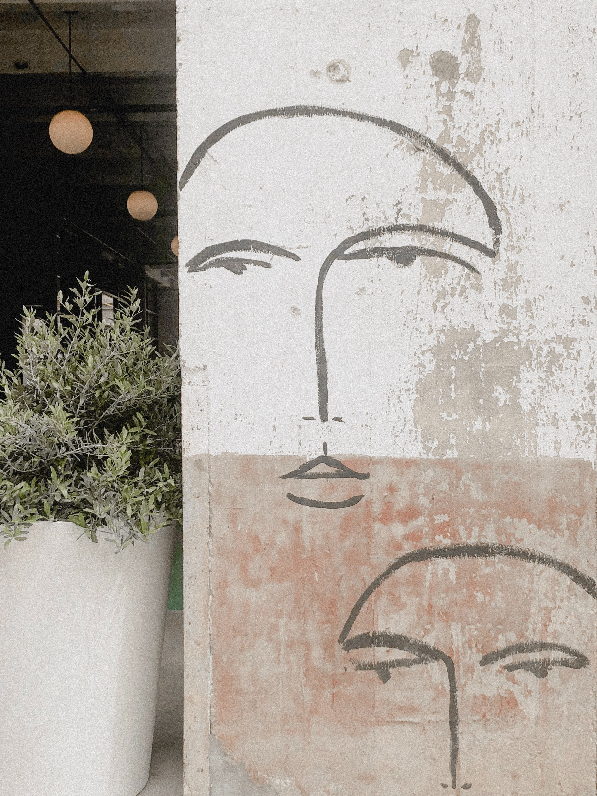
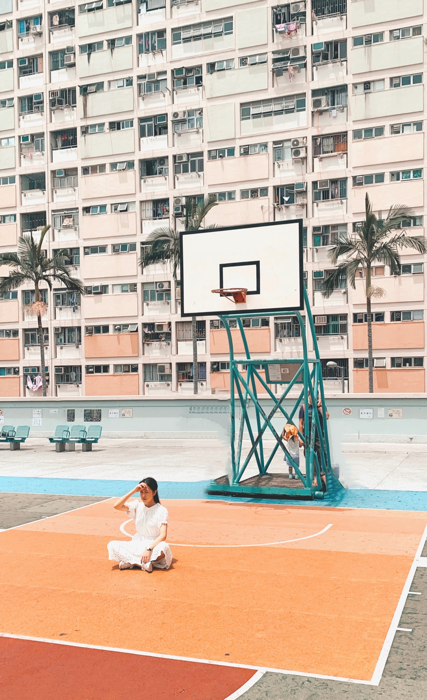

Assignment 7.2 Build a Web Page Exercise - Part 4
Rainbow on a City Sidewalk
(Author: Claudio Schwarz-Purzlbaum)
Faces on a Building Facade

(Author: Tania Miron)
Sitting in the Sun

(Author: Roman Shilin)
 (Author: Claudio Schwarz-Purzlbaum)
(Author: Claudio Schwarz-Purzlbaum)